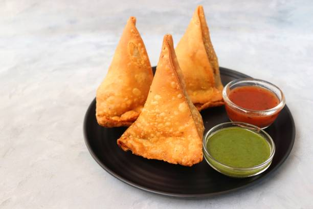

Home
Samosa

Description
Samosa is a classic Indian snack known for its crisp, golden-brown pastry and savory vegetable filling. The filling usually includes potato, spices, peas, and other hearty vegetables, wrapped in a thin dough and deep-fried to crunchy perfection.
Perfect for parties, festivals, or as a tea-time treat, samosas are loved for their delicious taste and portable, triangular shape. They are best enjoyed piping hot with tangy chutney.
Ingredients
- Oil (for cooking and deep frying)
- 1 large onion, chopped
- Ginger garlic paste
- Mixed vegetables (carrot, green beans, capsicum, cabbage, green peas, corn)
- Spice powders: chili, coriander, garam masala, turmeric
- Tomato ketchup or chopped tomato
- Fresh coriander leaves
- Samosa sheets or dough (flour + water for sealing)
- Salt to taste
Steps
- Heat oil, sauté chopped onion and ginger garlic paste until golden.
- Add spice powders, cook for a minute.
- Add grated/chopped vegetables; cook until just tender.
- Add salt and tomato ketchup (or tomato), mix well.
- Stir in boiled potatoes, mash and combine with veggies; finish with coriander leaves.
- Prepare a flour-water paste for sealing. Place filling into samosa sheets, fold and seal.
- Deep fry in medium-hot oil until crisp and golden. Serve hot.